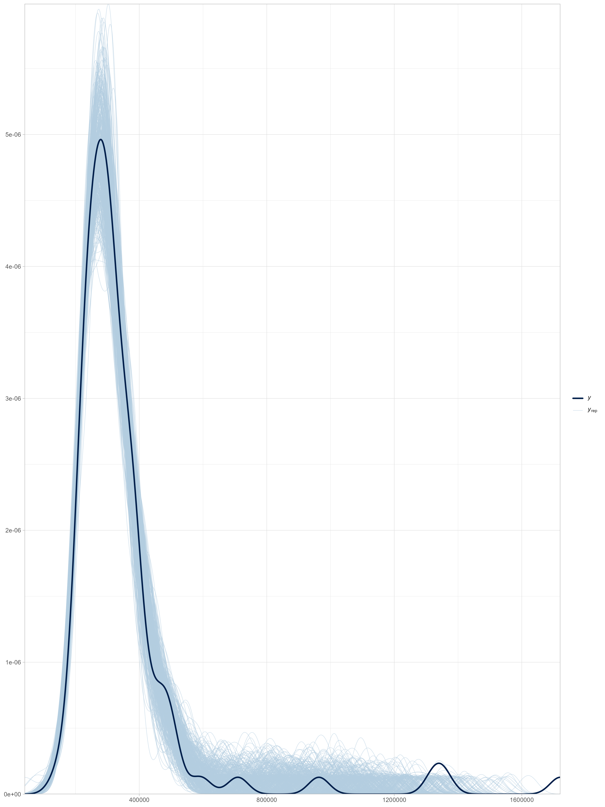
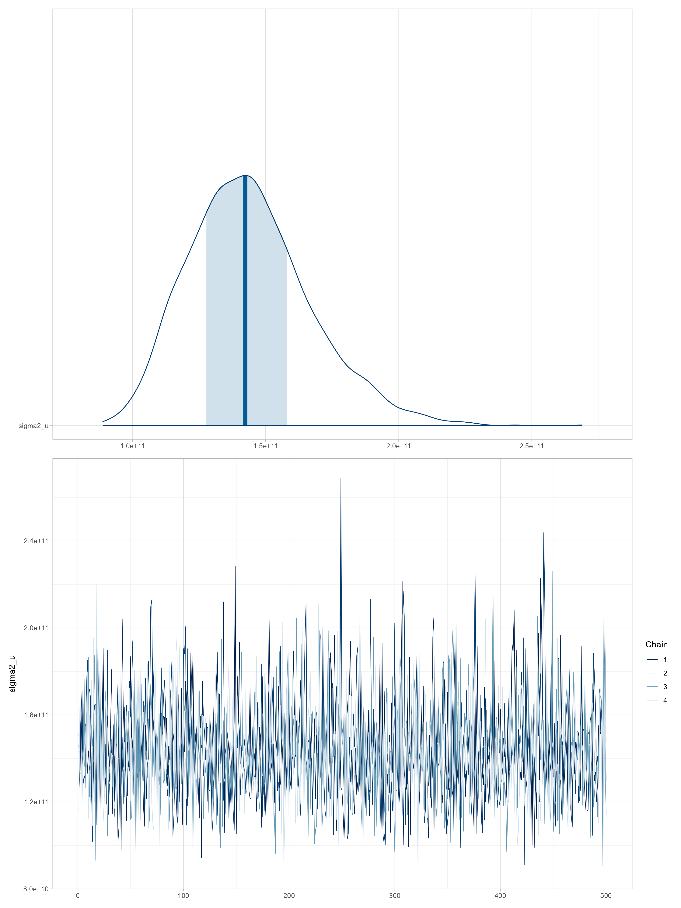
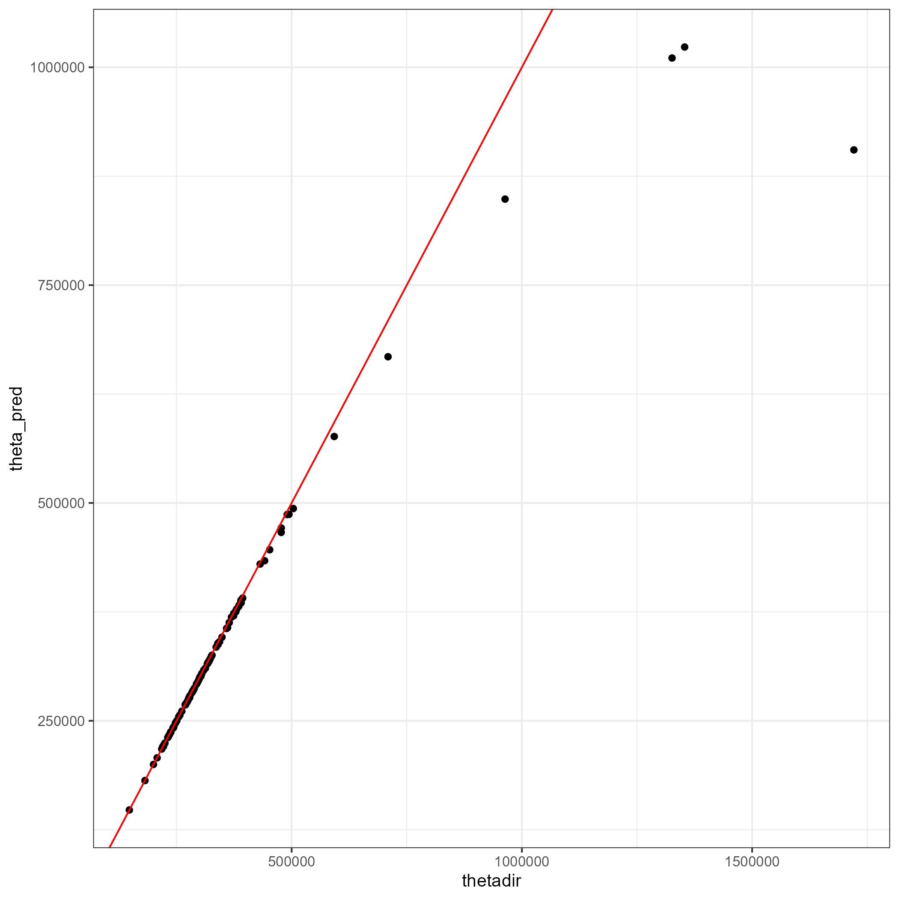
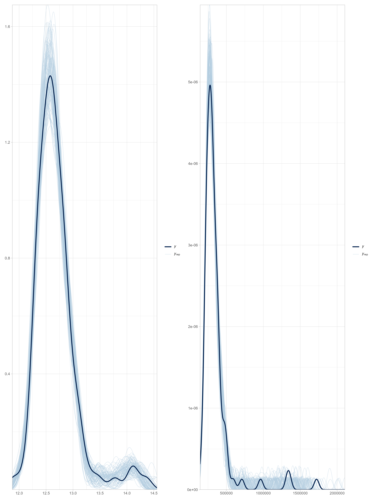
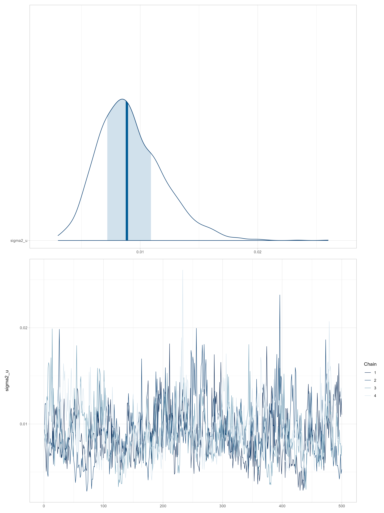
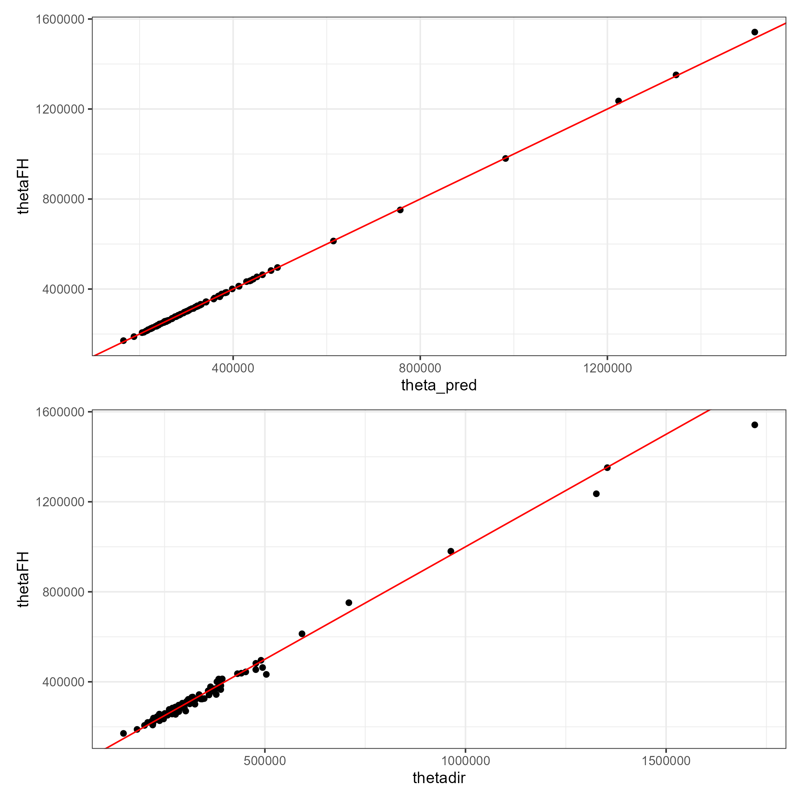

Curso de Benchmarking para Modelos Bayesianos de Estimación en Áreas Pequeñas con Métodos MCMC
Modelo de área para el ingreso medio
División de Estadísticas - CEPAL
Introducción al modelo de Fay–Herriot
El modelo de Fay III and Herriot (1979) es el modelo de área más utilizado en la estimación en áreas pequeñas (SAE).
Su popularidad radica en que suele disponerse de información agregada por dominios (departamentos, municipios, provincias), más que de microdatos a nivel individual.
Este modelo lineal mixto fue el primero en incorporar efectos aleatorios a nivel de área, permitiendo combinar la información muestral directa con covariables auxiliares externas.
\[ \theta_d = \boldsymbol{x}_d^{T}\boldsymbol{\beta} + u_d,\quad u_d \stackrel{ind}{\sim} (0,\sigma_u^2) \]
Modelo básico de estimación
Los verdaderos valores del ingreso medio \(\mu_d\) no son observables, por lo que se emplean estimadores directos provenientes de encuestas de hogares:
\[ \hat{\mu}^{DIR}_d = \mu_d + e_d,\quad e_d \stackrel{ind}{\sim} (0,\sigma^2_{e_d}) \]
Sustituyendo en el modelo de Fay–Herriot se obtiene:
\[ \hat{\mu}^{DIR}_d = \boldsymbol{x}_d^{T}\boldsymbol{\beta} + u_d + e_d \]
donde \(\sigma^2_{e_d}\) representa la varianza del error de muestreo estimada a partir de la encuesta (usando linealización o bootstrap).
Estimador BLUP bajo el modelo FH
El mejor predictor lineal insesgado (BLUP) de \(\mu_d\) se define como:
\[ \tilde{\mu}^{FH}_d = \boldsymbol{x}_d^{T}\tilde{\boldsymbol{\beta}} + \tilde{u}_d, \quad \tilde{u}_d = \gamma_d(\hat{\mu}^{DIR}_d - \boldsymbol{x}_d^{T}\tilde{\boldsymbol{\beta}}) \]
donde
\[ \gamma_d = \frac{\sigma_u^2}{\sigma_u^2 + \sigma^2_{e_d}} \]
El parámetro \(\gamma_d\) actúa como factor de ponderación. Si la varianza del error de muestreo \(\sigma^2_{e_d}\) es grande (poca precisión en la encuesta), \(\gamma_d\) tiende a 0 y el modelo da más peso a la predicción sintética \(\boldsymbol{x}_d^{T}\tilde{\boldsymbol{\beta}}\).
Aplicación al Ingreso Medio
Sea \(\mu_d\) el ingreso promedio per cápita en el dominio \(d\).
El modelo de área se define como:
\[ \hat{\mu}^{DIR}_d = \boldsymbol{x}_d^{T}\boldsymbol{\beta} + u_d + e_d \]
Se asume normalidad en la distribución muestral del estimador directo (justificado por el Teorema del Límite Central):
\[ \hat{\mu}^{DIR}_d \mid u_d \sim N(\boldsymbol{x}_d^{T}\boldsymbol{\beta}+u_d, \sigma^2_{e_d}), \quad u_d \sim N(0, \sigma_u^2) \]
Para la estimación bayesiana, asignamos distribuciones previas (priors) a \(\boldsymbol{\beta}\) y \(\sigma_u^2\):
\[ \beta_p \sim N(0,10000), \quad \sigma_u^2 \sim IG(0.0001, 0.0001) \]
Predictor bayesiano y forma cerrada
El predictor óptimo del ingreso medio \(\mu_d\) es el valor esperado condicional:
\[ E(\mu_d|\hat{\mu}^{DIR}_d) = \gamma_d\hat{\mu}^{DIR}_d + (1-\gamma_d)\boldsymbol{x}_d^{T}\boldsymbol{\beta} \]
con
\[ \gamma_d = \frac{\sigma_u^2}{\sigma_u^2 + \sigma_{e_d}^2} \]
Este predictor suaviza las estimaciones directas extremas causadas por tamaños de muestra pequeños, “encogiéndolas” hacia la media predicha por el modelo de regresión.
Interpretación
El modelo de Fay–Herriot mejora la eficiencia de las estimaciones del ingreso en municipios o dominios con pocos datos.
La precisión depende del equilibrio entre la varianza del área (\(\sigma_u^2\)) y la varianza de muestreo (\(\sigma_{e_d}^2\)).
Nota práctica: Aunque aquí presentamos el modelo sobre el ingreso directo, en la práctica es común modelar el logaritmo del ingreso (\(\log(\hat{\mu}_d)\)) para satisfacer mejor los supuestos de normalidad de los residuos y el efecto aleatorio.
Estimación del modelo de área en Stan
Preparación del entorno
El procedimiento de estimación utiliza las librerías tidyverse y magrittr para la manipulación y transformación de datos.
El modelo se implementa bajo un enfoque bayesiano mediante Stan.
Código de R
Lectura de datos base
Se cargan las estimaciones directas de ingreso y su varianza suavizada a nivel de dominio para el año 2017. Luego, se seleccionan las variables relevantes: dam2, nd, ingreso, vardir y hat_var.
| dam2 | nd | ingreso | vardir | hat_var |
|---|---|---|---|---|
| 01101 | 6447 | 369287.5 | 310789068 | 362989907 |
| 01107 | 3015 | 234466.0 | 46849247 | 199839625 |
| 01401 | 255 | NA | NA | NA |
| 01402 | 82 | NA | NA | NA |
| 01404 | 171 | NA | NA | NA |
| 01405 | 180 | NA | NA | NA |
Lectura y normalización de covariables
Se cargan los predictores auxiliares a nivel de dominio y se estandarizan para evitar problemas de escala.
Código de R
statelevel_predictors_df <- readRDS("../Recurso/data/Modelo_area/ingreso/statelevel_predictors_df_dam2.rds") %>%
mutate_at(.vars = c("luces_nocturnas",
"cubrimiento_cultivo",
"cubrimiento_urbano",
"modificacion_humana",
"accesibilidad_hospitales",
"accesibilidad_hosp_caminado"),
function(x) as.numeric(scale(x)))Unión de datos
Se realiza una unión completa entre las estimaciones directas y las covariables, utilizando dam2 como clave. Esto asegura que se mantengan todos los dominios, observados y no observados.
| dam2 | nd | ingreso | vardir | hat_var | area0 | area1 | etnia2 |
|---|---|---|---|---|---|---|---|
| 01101 | 6447 | 369287.5 | 310789068 | 362989907 | 0.0126 | 0.9874 | 0.0016 |
| 01107 | 3015 | 234466.0 | 46849247 | 199839625 | 0.0230 | 0.9770 | 0.0011 |
| 01401 | 255 | NA | NA | NA | 0.3575 | 0.6425 | 0.0004 |
| 01402 | 82 | NA | NA | NA | 1.0000 | 0.0000 | 0.0000 |
| 01404 | 171 | NA | NA | NA | 0.5938 | 0.4062 | 0.0011 |
División por dominios observados y no observados
Los dominios con información muestral (ingreso no nula) se separan de los dominios sin información (NA).
| dam2 | nd | ingreso | vardir | hat_var | area0 | area1 | etnia2 |
|---|---|---|---|---|---|---|---|
| 01401 | 255 | NA | NA | NA | 0.3575 | 0.6425 | 0.0004 |
| 01402 | 82 | NA | NA | NA | 1.0000 | 0.0000 | 0.0000 |
| 01404 | 171 | NA | NA | NA | 0.5938 | 0.4062 | 0.0011 |
| 01405 | 180 | NA | NA | NA | 0.5792 | 0.4208 | 0.0016 |
| 02102 | 169 | NA | NA | NA | 0.0381 | 0.9619 | 0.0008 |
| 02103 | 90 | NA | NA | NA | 1.0000 | 0.0000 | 0.0014 |
Construcción de la matriz de covariables
Se define la fórmula del modelo lineal con las variables predictoras.
A partir de ella, se construyen las matrices de diseño Xdat (observados) y Xs (no observados).
Código de R
formula_mod <- formula(~ dam + sexo2 + anoest2 + anoest3 + anoest4 +
edad2 + edad3 + edad4 + edad5 +
etnia1 + etnia2 + tasa_desocupacion )
library(stringr)
data_dir %<>% mutate(dam = str_sub(dam2, 1,2))
data_syn %<>% mutate(dam = str_sub(dam2, 1,2))
Xdat <- model.matrix(formula_mod, data = data_dir)
Xs <- model.matrix(formula_mod, data = data_syn)Alineación de matrices
Se identifican y agregan columnas faltantes a Xs para asegurar que ambas matrices tengan la misma estructura.
Preparación de la lista para Stan
Se crea la lista sample_data, que contiene toda la información necesaria para ejecutar el modelo en Stan.
Modelo en Stan: data
A continuación, se presenta la estructura del modelo de Fay–Herriot en el lenguaje de modelado probabilístico Stan.
Código de Stan
Modelo en Stan: parameters
Código de Stan
parameters {
vector[p] beta; // coefficients for predictors
real<lower=0> sigma2_u;
vector[N1] u;
}
transformed parameters{
vector[N1] theta;
vector[N1] thetaSyn;
vector[N1] thetaFH;
vector[N1] gammaj;
real<lower=0> sigma_u;
thetaSyn = X * beta;
theta = thetaSyn + u;
sigma_u = sqrt(sigma2_u);
gammaj = to_vector(sigma_u ./ (sigma_u + sigma_e));
thetaFH = (gammaj) .* y + (1-gammaj).*thetaSyn;
}Modelo en Stan: model y generated quantities
Compilación del modelo en R
Se ajusta el modelo de Stan utilizando la función stan() de la librería rstan. El modelo se guarda como objeto .rds para su posterior análisis.
Código de R
library(rstan)
fit_FH_normal <- "../Recurso/data/Modelo_area/ingreso/modelosStan/17FH_normal.stan"
options(mc.cores = parallel::detectCores())
rstan::rstan_options(auto_write = TRUE)
model_FH_normal <- stan(
file = fit_FH_normal,
data = sample_data,
warmup = 9500, iter = 10000, cores = 4,
verbose = FALSE
)
saveRDS(model_FH_normal, "../Recurso/data/Modelo_area/ingreso/model_FH_normal.rds")Lectura del modelo estimado
Para evitar recalcular el modelo, se puede cargar directamente el objeto ajustado.
Resultados del modelo para dominios observados
Se evalúa la capacidad predictiva del modelo mediante comparaciones gráficas entre la distribución empírica y las distribuciones predictivas posteriores de ingreso:
Código de R
library(bayesplot)
library(posterior)
library(patchwork)
y_pred_B <- as.array(model_FH_normal, pars = "theta") %>%
as_draws_matrix()
rowsrandom <- sample(nrow(y_pred_B), 500)
y_pred2 <- y_pred_B[rowsrandom, ]
p1 <- ppc_dens_overlay(y = as.numeric(data_dir$ingreso), y_pred2) +
theme_light()
ggsave(filename = "img/FH1.png",plot = p1, width = 12, height = 16)Comparación de densidades observadas y simuladas
Esta visualización compara la densidad observada \(y\) con las densidades simuladas \(\tilde{y}\) a partir de la distribución posterior, permitiendo identificar ajustes adecuados o desviaciones sistemáticas en la predicción.

Análisis de convergencia
El análisis de convergencia de las cadenas de Markov se realiza sobre el parámetro de varianza de los efectos aleatorios, \(\sigma^2_u\).
Se examinan los gráficos de densidad, áreas y trazas de MCMC:
Convergencia de las cadenas de \(\sigma^2_u\)
Una convergencia adecuada se evidencia cuando las cadenas se mezclan bien y no presentan tendencias sistemáticas.

Estrayendo la cadenas para comparaciones gráficas entre estimaciones
Comparaciones gráficas entre estimaciones
Comparaciones gráficas entre estimaciones

Predicciones para dominios no observados y consolidación (I)
A partir de las muestras posteriores de \(y_{\text{pred}}\), se obtienen estimaciones de ingreso para los dominios sin información directa.
Cada dominio no observado recibe una predicción \(\hat{\theta}_d\) con su error estándar asociado.
\[ \text{CV}{(\hat{\theta}_d)} = \frac{\text{EE}(\hat{\theta}_d)}{\hat{\theta}_d} \]
Estimación del FH de la ingreso en los dominios NO observados.
Predicciones para dominios no observados y consolidación (II)
Código de R
theta_syn_pred <- summary(model_FH_normal,pars = "y_pred")$summary %>%
data.frame()
data_syn <- data_syn %>%
mutate(
theta_pred = theta_syn_pred$mean,
theta_pred_EE = theta_syn_pred$sd,
Cv_theta_pred = theta_pred_EE/theta_pred)
saveRDS(data_syn, "../Recurso/data/Modelo_area/ingreso/data_syn.rds")
saveRDS(data_dir, "../Recurso/data/Modelo_area/ingreso/data_dir.rds")Predicciones para dominios no observados y consolidación (III)
| dam2 | nd | ingreso | vardir | hat_var | theta_pred | theta_pred_EE | Cv_theta_pred |
|---|---|---|---|---|---|---|---|
| 01401 | 255 | NA | NA | NA | -4180.2363 | 376365.6 | -90.0345 |
| 01402 | 82 | NA | NA | NA | -1068.0742 | 386899.6 | -362.2404 |
| 01404 | 171 | NA | NA | NA | -7026.9720 | 374114.9 | -53.2398 |
| 01405 | 180 | NA | NA | NA | 1977.5595 | 395316.6 | 199.9012 |
| 02102 | 169 | NA | NA | NA | 2616.8654 | 374810.1 | 143.2286 |
| 02103 | 90 | NA | NA | NA | -3017.2772 | 377512.8 | -125.1170 |
| 02104 | 224 | NA | NA | NA | 2109.2671 | 376031.7 | 178.2760 |
| 02203 | 194 | NA | NA | NA | 4792.5134 | 374964.9 | 78.2397 |
| 02301 | 406 | NA | NA | NA | 387.5971 | 384565.5 | 992.1787 |
| 02302 | 195 | NA | NA | NA | 9481.0336 | 373722.2 | 39.4179 |
Consolidar las bases
Finalmente, se consolidan las bases de estimaciones directas y sintéticas:
Transformación logarítmica
Como algunas predicciones de los ingresos son negativas, es necesario modificar el modelo y realizar una transformación que garantice el rango plausible de valores estimados y predichos.
Siendo \(\hat{\theta}_d\) la estimación directa del ingreso medio en el municipio \(d\), se define la variable transformada:
\[ \hat{z}_d = g(\hat{\theta}_d)=\log(\hat{\theta}_d) \]
La parte lineal del desarrollo de Taylor alrededor de \(\hat{\theta}_d = \theta_d\) está dada por:
\[ \hat{z}_d \approx g(\theta_d) + (\hat{\theta}_d - \theta_d) \left. \frac{\partial}{\partial \hat{\theta}_d} g(\hat{\theta}_d) \right|_{\hat{\theta}_d = \theta_d} \]
Derivada y aproximación lineal
Teniendo en cuenta que:
\[ \left. \frac{\partial}{\partial \hat{\theta}_d} \log(\hat{\theta}_d) \right|_{\hat{\theta}_d = \theta_d} = \frac{1}{\theta_d} \]
Entonces:
\[ \hat{z}_d \approx \log(\theta_d) + \frac{1}{\theta_d}(\hat{\theta}_d - \theta_d) \]
Por lo tanto, el valor esperado y la varianza (Método Delta) están dados por:
- Valor esperado
\[ E(\hat{z}_d) \approx \log(\theta_d) \]
- Varianza aproximada
\[ V(\hat{z}_d) \approx \frac{1}{\theta_d^2}\,\text{Var}(\hat{\theta}_d) \]
Construcción de la matriz de covariables
Se define la fórmula del modelo lineal con las variables predictoras.
A partir de ella, se construyen las matrices de diseño Xdat (observados) y Xs (no observados).
Construcción de la matriz de covariables
Código de R
formula_mod <- formula(~ dam + sexo2 + anoest2 + anoest3 + anoest4 +
edad2 + edad3 + edad4 + edad5 +
etnia1 + etnia2 + tasa_desocupacion +
luces_nocturnas + cubrimiento_urbano +
pollution_CO + vegetation_NDVI +
Elevation + precipitation +
population_density + cubrimiento_cultivo +
alfabeta)
Xdat <- model.matrix(formula_mod, data = data_dir)
Xs <- model.matrix(formula_mod, data = data_syn)Alineación de matrices
Se identifican y agregan columnas faltantes a Xs para asegurar que ambas matrices tengan la misma estructura.
Preparación de la lista para Stan
Se crea la lista sample_data, que contiene toda la información necesaria para ejecutar el modelo en Stan.
Compilación del modelo en R
Se ajusta el modelo de Stan utilizando la función stan() de la librería rstan. El modelo se guarda como objeto .rds para su posterior análisis.
Código de R
fit_FH_normal <- "../Recurso/data/Modelo_area/ingreso/modelosStan/17FH_normal.stan"
options(mc.cores = parallel::detectCores())
rstan::rstan_options(auto_write = TRUE)
model_FH_normal <- stan(
file = fit_FH_normal,
data = sample_data,
warmup = 9500, iter = 10000, cores = 4, verbose = FALSE
)
saveRDS(model_FH_normal, "../Recurso/data/Modelo_area/ingreso/model_FH_normal_loging.rds")Lectura del modelo estimado
Para evitar recalcular el modelo, se puede cargar directamente el objeto ajustado.
Resultados del modelo para dominios observados
Se evalúa la capacidad predictiva del modelo mediante comparaciones gráficas entre la distribución empírica y las distribuciones predictivas posteriores de ingreso:
Código de R
y_pred_B <- as.array(model_FH_normal, pars = "theta") %>%
as_draws_matrix()
rowsrandom <- sample(nrow(y_pred_B), 100)
y_pred2 <- y_pred_B[rowsrandom, ]
p1 <- ppc_dens_overlay(y = as.numeric(data_dir$logingreso), y_pred2) +
theme_light()
p2 <- ppc_dens_overlay(y = as.numeric(data_dir$ingreso), exp(y_pred2)) +
theme_light()
p3 <- p1|p2
ggsave(filename = "img/FH1_log.png",plot = p3, width = 12, height = 16)Comparación de densidades observadas y simuladas
Esta visualización compara la densidad observada \(y\) con las densidades simuladas \(\tilde{y}\) a partir de la distribución posterior, permitiendo identificar ajustes adecuados o desviaciones sistemáticas en la predicción.

Análisis de convergencia
El análisis de convergencia de las cadenas de Markov se realiza sobre el parámetro de varianza de los efectos aleatorios, \(\sigma^2_u\).
Se examinan los gráficos de densidad, áreas y trazas de MCMC:
Convergencia de las cadenas de \(\sigma^2_u\)
Una convergencia adecuada se evidencia cuando las cadenas se mezclan bien y no presentan tendencias sistemáticas.

Estrayendo la cadenas para comparaciones gráficas entre estimaciones
Código de R
theta <- summary(model_FH_normal,pars = "theta")$summary %>%
data.frame()
theta_FH <- summary(model_FH_normal,pars = "thetaFH")$summary %>%
data.frame()
data_dir %<>% mutate(
thetadir = ingreso,
theta_pred = exp(theta$mean),
thetaFH = exp(theta_FH$mean),
theta_pred_EE = exp(theta$sd),
Cv_theta_pred = theta_pred_EE/theta_pred
)Comparaciones gráficas entre estimaciones
Código de R
# Estimación predicción del modelo vs ecuación ponderada de FH
p11 <- ggplot(data_dir, aes(x = theta_pred, y = thetaFH)) +
geom_point() +
geom_abline(slope = 1,intercept = 0, colour = "red") +
theme_bw(10)
# Estimación con la ecuación ponderada de FH Vs estimación directa
p21 <- ggplot(data_dir, aes(x = thetadir, y = thetaFH)) +
geom_point() +
geom_abline(slope = 1,intercept = 0, colour = "red") +
theme_bw(10)
p1 <- (p11)/(p21)
ggsave(filename = "img/FH3_log.png",plot = p1, scale = 2)Comparaciones gráficas entre estimaciones

Predicciones para dominios no observados y consolidación (II)
Código de R
theta_syn_pred <- summary(model_FH_normal,pars = "y_pred")$summary %>%
data.frame()
data_syn <- data_syn %>%
mutate(
theta_pred = exp(theta_syn_pred$mean),
thetaFH = exp(theta_pred),
theta_pred_EE = exp(theta_syn_pred$sd),
Cv_theta_pred = theta_pred_EE/theta_pred)
saveRDS(data_syn, "../Recurso/data/Modelo_area/ingreso/data_syn_log.rds")
saveRDS(data_dir, "../Recurso/data/Modelo_area/ingreso/data_dir_log.rds")Predicciones para dominios no observados y consolidación (III)
| dam2 | nd | ingreso | vardir | hat_var | theta_pred | thetaFH | theta_pred_EE | Cv_theta_pred |
|---|---|---|---|---|---|---|---|---|
| 01401 | 255 | NA | NA | NA | 293175.6 | 293175.6 | 1.2607 | 0 |
| 01402 | 82 | NA | NA | NA | 427652.3 | 427652.3 | 1.3963 | 0 |
| 01404 | 171 | NA | NA | NA | 318128.9 | 318128.9 | 1.2278 | 0 |
| 01405 | 180 | NA | NA | NA | 615538.6 | 615538.6 | 1.7152 | 0 |
| 02102 | 169 | NA | NA | NA | 356806.1 | 356806.1 | 1.3264 | 0 |
| 02103 | 90 | NA | NA | NA | 1088774.6 | 1088774.6 | 2.3122 | 0 |
| 02104 | 224 | NA | NA | NA | 411277.5 | 411277.5 | 1.2238 | 0 |
| 02203 | 194 | NA | NA | NA | 633114.2 | 633114.2 | 1.2507 | 0 |
| 02301 | 406 | NA | NA | NA | 258671.7 | 258671.7 | 1.2215 | 0 |
| 02302 | 195 | NA | NA | NA | 467159.6 | 467159.6 | 1.4265 | 0 |
Consolidar las bases
Finalmente, se consolidan las bases de estimaciones directas y sintéticas:
Código de R
Conclusiones
El modelo de Fay-Herriot permite combinar información directa y auxiliar, mejorando la precisión en dominios pequeños.
Las gráficas de densidad y convergencia sugieren que el ajuste fue adecuado y estable.
Los resultados finales proveen estimaciones coherentes para dominios observados y no observados.
Referencias